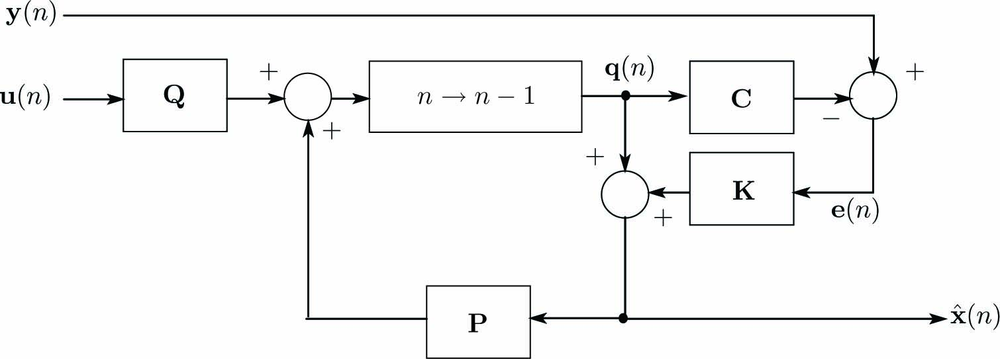

動的システムを次式の離散時間状態方程式で与えます。
\begin{align} \left. \begin{array}{@{\,}rl} \mathbf{x}(n+1)&=~\mathbf{P}\mathbf{x}(n)+\mathbf{Q}\mathbf{u}(n)+\mathbf{w}(n)\\ \mathbf{y}(n)&=~\mathbf{C}\mathbf{x}(n)+\mathbf{v}(n) \end{array}\label{eq:RtnEqn} \right\} \end{align}ここに、\(\mathbf{u}\)は入力、\(\mathbf{x}\)は状態量、\(\mathbf{y}\)は出力(計測値)、 \(\mathbf{P}\)は遷移行列、\(\mathbf{Q}\)は入力係数行列、\(\mathbf{C}\)は出力係数行列、 \(\mathbf{v}\)は出力ノイズ、\(\mathbf{w}\)は入力ノイズです。
式\eqref{eq:RtnEqn}をブロック線図で表現すると下図になります。

離散時間状態方程式\eqref{eq:RtnEqn}の状態量\(\mathbf{x}(n)\)は高次微分を含むため直接観測することができません。 そこで観測器により推定します。 式\eqref{eq:RtnEqn}の状態観測器(オブザーバー)を次式で与えます。
\begin{align} \left. \begin{array}{@{\,}rl} {\mathbf{q}}(n+1)&=~\mathbf{P}\hat{\mathbf{x}}(n)+\mathbf{Q}\mathbf{u}(n)\\ \mathbf{e}(n)&=~\mathbf{y}(n)-\mathbf{C}\mathbf{q}(n)\\ \hat{\mathbf{x}}(n)&=~{\mathbf{q}}(n)+\mathbf{K}\mathbf{e}(n) \end{array}\label{eq:KalmanFilt} \right\} \end{align}\(\hat{\mathbf{x}}(n)\)は状態量\(\mathbf{x}(n)\)の推定量、 \(\mathbf{q}(n)\)は状態観測器の状態量であり、\(\mathbf{q}(n+1)\)は状態量\(\mathbf{x}(n)\)の未来予測値となっています。 \(\mathbf{e}(n)\)は計測値\(\mathbf{y}(n)\)と状態観測器の出力\(\mathbf{C}\mathbf{q}(n)\)の偏差です。 偏差量\(\mathbf{e}(n)\)は行列\(\mathbf{K}\)を補正係数として状態量\(\mathbf{q}(n)\)を補正します。
状態観測器\eqref{eq:KalmanFilt}をブロック線図で表現すると下図になります。 このブロック線図では制御入力\(\mathbf{u}(n)\)と計測で得られた\(\mathbf{y}(n)\)を入力とし、 状態推定値\(\hat{\mathbf{x}}(n)\)を出力としていることが分かります。
カルマンフィルターは状態推定誤差\((\mathbf{x}(n)-\hat{\mathbf{x}(n)})\)を最小化する状態観測器であり、 状態推定誤差を最小化するために行列\(\mathbf{K}\)(カルマンゲイン)を次式で与えます。
\begin{align} \left. \begin{array}{@{\,}rl} \mathbf{K}&=~\mathbf{X}(n)\mathbf{C}^T\mathbf{V}^{-1}\\ \mathbf{X}(n)&=~(\mathbf{I}-\mathbf{K}\mathbf{C})(\mathbf{P}\mathbf{X}(n-1)\mathbf{P}^T+\mathbf{W})\\ \mathbf{V}&=~E[\mathbf{v}(n)^T\mathbf{v}(n)]\\ \mathbf{W}&=~E[\mathbf{w}(n)^T\mathbf{w}(n)] \end{array}\label{eq:Mat_W} \right\} \end{align}\(\mathbf{V}\)、\(\mathbf{W}\)はそれぞれ\(\mathbf{v}(n)\)、\(\mathbf{w}(n)\)の共分散行列です。\(E[*]\)は算術平均であり、\(E[*]\)の中が\(\mathbf{x}(n)\)の場合、次式で与えられます。
\begin{align*} E[x(n)] = \frac{1}{n}\sum_{k = 0}^{n}x(k) \end{align*}ここでは、行列\(\mathbf{V}\)、\(\mathbf{W}\)が定数行列となる定常状態について導出します。 まず、状態量\(\hat{x}\)の状態推定誤差\(\tilde{\mathbf{x}}(n)\)を次式で与えます。
\begin{align} \tilde{\mathbf{x}}(n)=\mathbf{x}(n)-\hat{\mathbf{x}}(n) \end{align}評価式\(J(n)\)を状態推定誤差\(\tilde{\mathbf{x}}(n)\)の二次評価式(分散)として与えます。
\begin{align} J(n) = E[\tilde{\mathbf{x}}(n)^T\tilde{\mathbf{x}}(n)] = \frac{1}{n}\sum_{k = 0}^{n}\tilde{\mathbf{x}}(k)^T\tilde{\mathbf{x}}(k) \label{eq:Evalation} \end{align}式\eqref{eq:RtnEqn}の状態量\(\mathbf{x}(n)\)と状態観測器\eqref{eq:KalmanFilt}の状態量\(\mathbf{q}(n)\)の誤差を\(\mathbf{z}(n) = \mathbf{x}(n) - \mathbf{q}(n)\)と定義すると、 次式が得られます。
\begin{align} \mathbf{z}(n+1)=\mathbf{x}(n+1)-\mathbf{q}(n+1)=\mathbf{P}\tilde{\mathbf{x}}(n)+\mathbf{w}(n) \label{eq:StateEqZ} \end{align}状態推定ベクトル\(\hat{\mathbf{x}}(n)\)の誤差ベクトルを次式で与えます。
\begin{align} \tilde{\mathbf{x}}(n)&=~\mathbf{x}(n)-\hat{\mathbf{x}}(n)\nonumber\\ &=~\mathbf{x}(n)-\mathbf{q}(n)-\mathbf{K}\{\mathbf{C}\hat{\mathbf{x}}(n)+\hat{\mathbf{v}}(n)-\hat{\mathbf{C}}\mathbf{q}(n)\}\nonumber\\ &=~(\mathbf{I}-\mathbf{K}\mathbf{C})\mathbf{z}(n)-\mathbf{K}\mathbf{v}(n)\label{eq:ErrorOfEst} \end{align}式\eqref{eq:ErrorOfEst}を式\eqref{eq:Evalation}に代入し、\(E[\tilde{\mathbf{z}}(n)\tilde{\mathbf{v}}^T(n)] = 0\)を考慮すると、評価式\eqref{eq:Evalation}は次式となります。
\begin{align} J(n)&=~E[{\mathbf{z}(n)^T(\mathbf{I}-\mathbf{K}\mathbf{C})^T(\mathbf{I}-\mathbf{K}\mathbf{C})\mathbf{z}(n)}]+E[\mathbf{v}(n)^T\mathbf{K}^T\mathbf{K}\mathbf{v}(n)]\nonumber\\ &=~E[\mathbf{z}(n)^T\mathbf{z}(n)]-E[{\mathbf{z}(n)^T\mathbf{K}\mathbf{C}\mathbf{z}(n)}]-E[{\mathbf{z}(n)^T\mathbf{C}^T\mathbf{K}^T\mathbf{z}(n)}]+E[{\mathbf{z}(n)^T\mathbf{C}^T\mathbf{K}^T\mathbf{K}\mathbf{C}\mathbf{z}(n)}] +E[\mathbf{v}(n)^T\mathbf{K}^T\mathbf{K}\mathbf{v}(n)] \end{align}最小二乗法と同様に状態推定誤差\(\tilde{\mathbf{x}}\)を 最小化するための\(\mathbf{K}\)に対する評価式\eqref{eq:Evalation}の極値条件(\(\partial J/\partial\mathbf{K}=\mathbf{O}\))は次式となります。
\begin{align} \frac{\partial J(n)}{\partial\mathbf{K}}=-2E[{\mathbf{z}(n)^T\mathbf{z}(n)]\mathbf{C}}-2\mathbf{K}\mathbf{C}E[{\mathbf{z}(n)^T\mathbf{z}(n)}]\mathbf{C}+2\mathbf{K}E[\mathbf{v}(n)^T\mathbf{v}(n)]=\mathbf{O} \label{eq:Cond1} \end{align}ここで、\(\tilde{\mathbf{x}}(n)\)と\(\mathbf{z}(n)\)の共分散行列を次式で与えます。
\begin{align} \mathbf{Z}(n)&=E[\mathbf{z}(n)\mathbf{z}(n)^T] \label{eq:Mat_Z} \end{align}式\eqref{eq:MatP}、\eqref{eq:Mat_Z}を用いると、式\eqref{eq:Cond1}は次式になります。
\begin{align} \frac{\partial J(n)}{\partial\mathbf{K}}=-2\mathbf{Z}(n)\mathbf{C}^T-2\mathbf{K}\mathbf{C}\mathbf{Z}(n)\mathbf{C}^T+2\mathbf{K}\mathbf{V}=\mathbf{O} \end{align}したがって、\(\mathbf{K}\)に対する評価式\eqref{eq:Evalation}の極値条件(\(\partial J/\partial\mathbf{K}=\mathbf{O}\))は次式となります。
\begin{align} (\mathbf{I} - \mathbf{K}\mathbf{C})\mathbf{Z}(n)\mathbf{C}^T = \mathbf{K}\mathbf{V} \label{eq:KalmanGain1} \end{align}式\eqref{eq:KalmanGain1}を変形してKalmanゲインは次式となります。
\begin{align} \mathbf{K}={\mathbf Z}(n){\mathbf C}^T\{{\mathbf C}{\mathbf Z}(n){\mathbf C}^T+{\mathbf V}\}^{-1}. \label{eq:KalmanGain} \end{align}Riccati(リカチ)方程式の解では Kalmanゲインを計算するための\({\mathbf Z}(n)\)を求めます。